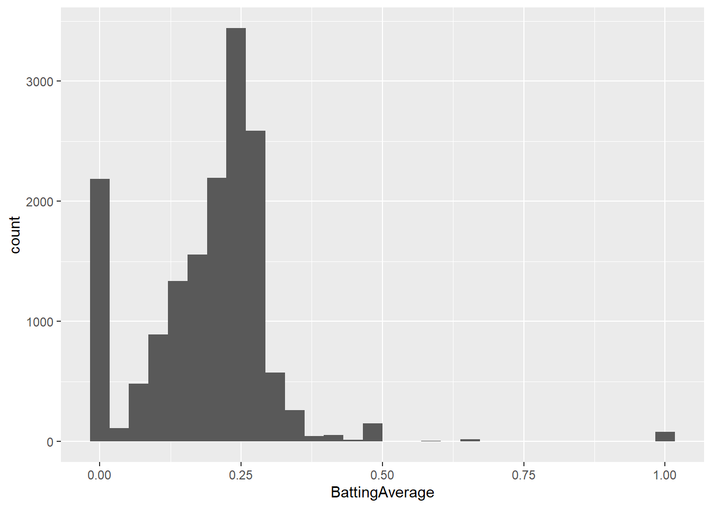
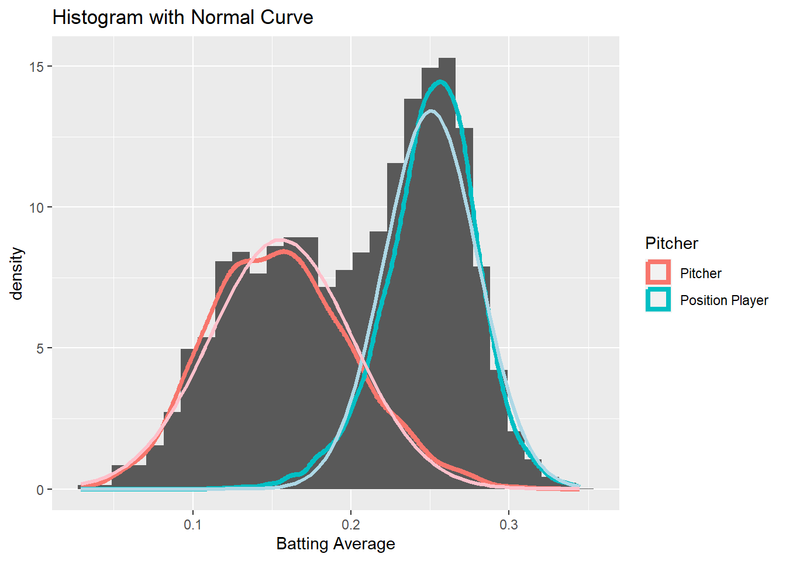
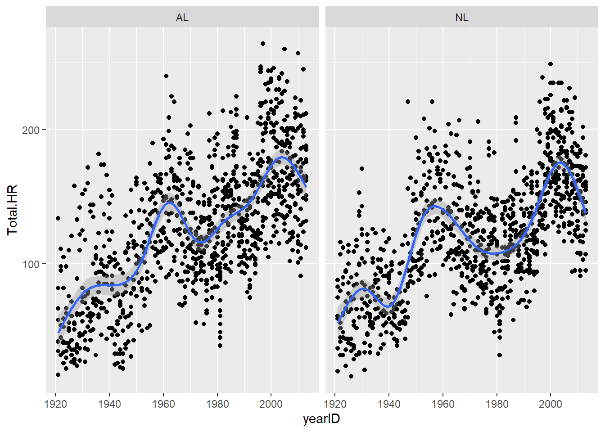
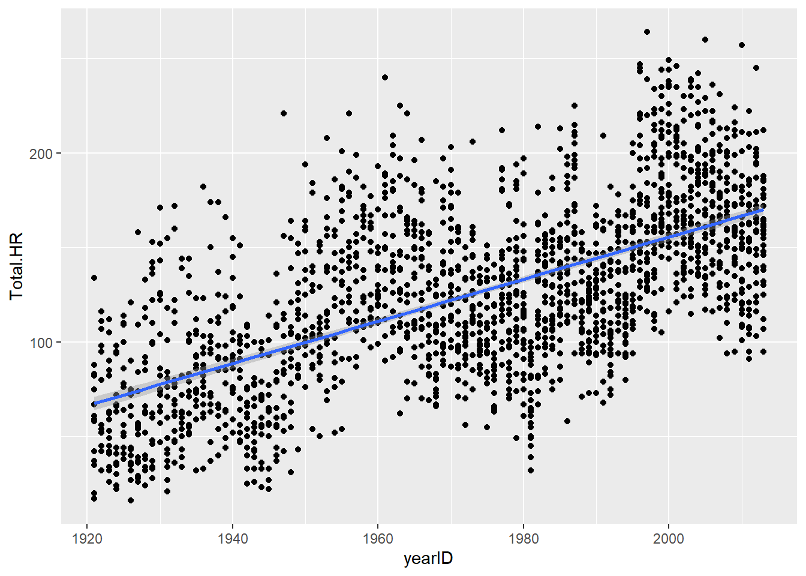
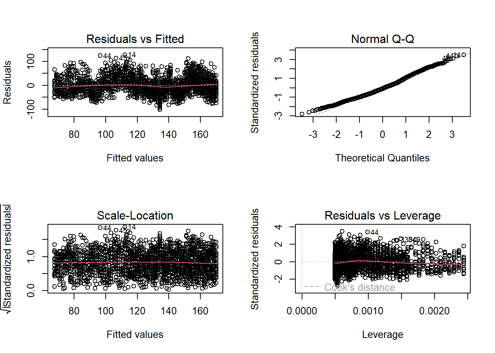

Submodule 1.1
Getting started
Fall 2022
Welcome to the 2022 UNR R workshop- let’s get started!
Get materials for this module
You will be introduced to a lot of new material very quickly in this workshop, and you are not expected to remember everything! ‘Cheatsheets’ can quickly and easily refresh your memory about syntax that can be difficult to remember. So don’t worry if you don’t memorize everything we do together in this workshop- the key is that you leave this workshop with comfort working in the RStudio environment, doing some basic data operations in R, and most importantly, learning and trying new things on your own!
Here are links to good R “cheatsheets”:
Helpful packages
ggplot
cheat sheet
data
‘tidying’
data
transformation
working
with dates and times
Many additional cheat sheets are available here
Load script for submodule #1.1
Click here to download the script for this submodule! I recommend right-clicking (or command-clicking for Macs) on the link and selecting the “Save As” option from the context menu. Save the script to a convenient folder on your laptop (e.g., a folder called “Rworkshop2022”), which will serve as your working directory for this workshop.
Start a new RStudio Project. To do this, open RStudio and from the File menu select File>>New Project. In the menu that follows, select “Existing Directory”, and then navigate to the folder in which you saved the R script for this module (your working directory). Select this folder to be your project directory. Every time you open this project (File >> Open Project), this project directory will be the first place that R looks for data files and code, and will be the default location for saving data and code.
Load a blank script in RStudio. To do this, click on the “blank paper” icon at the far left of the RStudio toolbar (or File >> New File >> R script). Your RStudio interface should now be divided into four quadrants. In the RStudio default configuration, the top left panel is your script (a set of written commands that R can recognize and execute), the bottom left panel is your console (your direct connection with R), the top right panel is your environment (displays all the objects – data sets, variables, functions– that you have defined in your current R session), and the bottom right panel is a set of tabbed interfaces that let you view help files, load packages, view plots, view files in your working directory, etc.
Take a couple minutes to familiarize yourself with the RStudio environment.
Let’s get started!

Explore the R console
The R console is located in the left half or bottom left of the RStudio interface (see figure above).
The R console (what you see if you opened R directly instead of RStudio) is a command line interface, and is your direct connection with R: you give R a command at the prompt and R executes that command.
Click on the console, just to the right of one of the “>” prompts.
You can use the console like a calculator. For example, type
6+11at the prompt and hit enter.Now hit the “up” arrow. The R console remembers all previous commands that it has executed in this session, which allows you to re-run commands relatively easily.
Try typing
# 2+2and hitting “Enter”. Nothing happens, right? We will come back to the special hashtag character shortly.
Let’s create our first object
Objects are defined using R’s assignment operator
(Windows shortcut: Alt + -)(Mac: replace Alt with Option), which looks
like a left arrow (<-). Type the following statement
directly into the console:
myname <- "Jim Bob" # or use your real name.Then hit “Enter”. What does R return?
NOTHING!
BUT…. check the Environment window (top right of RStudio interface- list of all the objects you’ve defined in this session). You should see that you now have a new object in your environment, called “myname”, and this object contains a single text string.
Now type myname into the R console and hit “Enter”. What
happens?
If you enter the name of an object at the command line, R automatically prints the value of the object!
NOTE: RStudio has a useful auto-fill feature, which can save you lots of time and headaches. After you’ve typed the first couple letters (e.g., “my”), RStudio will suggest “myname” (or use the “tab” key to trigger RStudio to give you autofill options) and you can just scroll to the right object/function and hit “Enter”! The auto-type feature, unlike R, is not case sensitive!
Graduating to R Scripts
You will quickly realize that although the command-line R console is nice to use for some things (e.g., quick things that don’t need to be saved), there is a much better way to develop R code. That is by storing a sequential set of commands as a text file. This text file (the standard is to use the “.R” extension) is called an R script.
Make a new script
If you haven’t done it already, create a new R script by clicking on the “blank paper” icon at the far left of the RStudio toolbar (or File>>New File>>R script). The top left quadrant of the RStudio interface (at least by default) should now contain a blank R script.
In your blank script, let’s define a new object. For example:
my_obj <- 6+11
Now place the cursor somewhere within the line of text you just wrote and hit ‘Ctrl+Enter’ (or ‘Command+Enter’) to run that line of code! You should see a new object (‘my_obj’) pop up in your environment.1.
Take a few minutes to get comfortable running commands and defining new objects using your new R script.
Of course, it’s always a good idea to save your scripts often – so feel free to save your new script before you move on.
Load an Existing script
Remember the file you downloaded at the beginning of this submodule? That file is an R script (“module1_1.R”); Let’s load it up now!
To do this, click on the “folder” icon on the Rstudio toolbar (or File >> Open File) and choose the script you downloaded earlier.
The first couple lines of the script for this module are preceded by hashtags. As you have already seen, R ignores these lines (anything preceded by a hashtag is ignored)- they are called comments, and they help to keep code organized and understandable.
use comments early and often- they are tremendously valuable.
Now you know the basics of how to use R scripts! Now, let’s keep working through the remainder of the script you just opened.
A demo of R in action
Before we get into the basics, let’s just run through some of what R can do! Don’t worry if you don’t understand something- we will go over all of this in greater detail later!
To get started, let’s first load some R packages that help with data wrangling and exploration
Packages in the CRAN repository can be installed using the function “install.packages()”:
# R DEMO ----------------------
# don't worry if you don't understand this just yet- this is just a
# taste of where we are going!
# Install packages
# NOTE you only have to do this once. If you have not already installed the packages, you can uncomment and run the following lines:
# install.packages(c("ggplot2","tidyverse"))Alternatively, you can use the “packages” tab in Rstudio (lower right) and use the “install” button.
Once packages are installed, you can load them into your workspace (so they are useable in your R session) using the “library()” function:
# Load packages
library(ggplot2)
library(tidyverse)
library(Lahman) # for getting baseball dataNext we can load in some data. To give you a sense of what R can do, let’s load in some relatively complex datasets. These datasets happen to be about baseball, but they can stand in for any complex datasets you might encounter in your work!
# Read in data (from the web)
salaries <- read_csv("http://dgrtwo.github.io/pages/lahman/Salaries.csv")
master <- read_csv("http://dgrtwo.github.io/pages/lahman/Master.csv")
batting <- read_csv("http://dgrtwo.github.io/pages/lahman/Batting.csv")
# Read in data from package (you can read in all of these from the Lahman package!)
fielding <- tibble(Lahman::Fielding)Let’s examine these data objects in r. Again, we will get into this in more detail later!
# explore the data
salaries## # A tibble: 23,956 × 5
## yearID teamID lgID playerID salary
## <dbl> <chr> <chr> <chr> <dbl>
## 1 1985 BAL AL murraed02 1472819
## 2 1985 BAL AL lynnfr01 1090000
## 3 1985 BAL AL ripkeca01 800000
## 4 1985 BAL AL lacyle01 725000
## 5 1985 BAL AL flanami01 641667
## 6 1985 BAL AL boddimi01 625000
## 7 1985 BAL AL stewasa01 581250
## 8 1985 BAL AL martide01 560000
## 9 1985 BAL AL roeniga01 558333
## 10 1985 BAL AL mcgresc01 547143
## # … with 23,946 more rows# summary(salaries) # summary statistics for all variables in data frame
master## # A tibble: 18,354 × 24
## playerID birthYear birthMo…¹ birth…² birth…³ birth…⁴ birth…⁵ death…⁶ death…⁷
## <chr> <dbl> <dbl> <dbl> <chr> <chr> <chr> <dbl> <dbl>
## 1 aardsda01 1981 12 27 USA CO Denver NA NA
## 2 aaronha01 1934 2 5 USA AL Mobile NA NA
## 3 aaronto01 1939 8 5 USA AL Mobile 1984 8
## 4 aasedo01 1954 9 8 USA CA Orange NA NA
## 5 abadan01 1972 8 25 USA FL Palm B… NA NA
## 6 abadfe01 1985 12 17 D.R. La Rom… La Rom… NA NA
## 7 abadijo01 1854 11 4 USA PA Philad… 1905 5
## 8 abbated01 1877 4 15 USA PA Latrobe 1957 1
## 9 abbeybe01 1869 11 11 USA VT Essex 1962 6
## 10 abbeych01 1866 10 14 USA NE Falls … 1926 4
## # … with 18,344 more rows, 15 more variables: deathDay <dbl>,
## # deathCountry <chr>, deathState <chr>, deathCity <chr>, nameFirst <chr>,
## # nameLast <chr>, nameGiven <chr>, weight <dbl>, height <dbl>, bats <chr>,
## # throws <chr>, debut <date>, finalGame <date>, retroID <chr>, bbrefID <chr>,
## # and abbreviated variable names ¹birthMonth, ²birthDay, ³birthCountry,
## # ⁴birthState, ⁵birthCity, ⁶deathYear, ⁷deathMonth# summary(master)
batting## # A tibble: 97,889 × 24
## playe…¹ yearID stint teamID lgID G G_bat…² AB R H `2B` `3B`
## <chr> <dbl> <dbl> <chr> <chr> <dbl> <dbl> <dbl> <dbl> <dbl> <dbl> <dbl>
## 1 aardsd… 2004 1 SFN NL 11 11 0 0 0 0 0
## 2 aardsd… 2006 1 CHN NL 45 43 2 0 0 0 0
## 3 aardsd… 2007 1 CHA AL 25 2 0 0 0 0 0
## 4 aardsd… 2008 1 BOS AL 47 5 1 0 0 0 0
## 5 aardsd… 2009 1 SEA AL 73 3 0 0 0 0 0
## 6 aardsd… 2010 1 SEA AL 53 4 0 0 0 0 0
## 7 aardsd… 2012 1 NYA AL 1 NA NA NA NA NA NA
## 8 aaronh… 1954 1 ML1 NL 122 122 468 58 131 27 6
## 9 aaronh… 1955 1 ML1 NL 153 153 602 105 189 37 9
## 10 aaronh… 1956 1 ML1 NL 153 153 609 106 200 34 14
## # … with 97,879 more rows, 12 more variables: HR <dbl>, RBI <dbl>, SB <dbl>,
## # CS <dbl>, BB <dbl>, SO <dbl>, IBB <dbl>, HBP <dbl>, SH <dbl>, SF <dbl>,
## # GIDP <dbl>, G_old <dbl>, and abbreviated variable names ¹playerID,
## # ²G_batting# summary(batting)
fielding## # A tibble: 147,080 × 18
## playe…¹ yearID stint teamID lgID POS G GS InnOuts PO A E
## <chr> <int> <int> <fct> <fct> <chr> <int> <int> <int> <int> <int> <int>
## 1 abercd… 1871 1 TRO NA SS 1 1 24 1 3 2
## 2 addybo… 1871 1 RC1 NA 2B 22 22 606 67 72 42
## 3 addybo… 1871 1 RC1 NA SS 3 3 96 8 14 7
## 4 allisa… 1871 1 CL1 NA 2B 2 0 18 1 4 0
## 5 allisa… 1871 1 CL1 NA OF 29 29 729 51 3 7
## 6 allisd… 1871 1 WS3 NA C 27 27 681 68 15 20
## 7 ansonc… 1871 1 RC1 NA 1B 1 0 15 7 0 0
## 8 ansonc… 1871 1 RC1 NA 2B 2 1 30 3 4 1
## 9 ansonc… 1871 1 RC1 NA 3B 20 19 555 38 52 28
## 10 ansonc… 1871 1 RC1 NA C 5 4 93 10 0 8
## # … with 147,070 more rows, 6 more variables: DP <int>, PB <int>, WP <int>,
## # SB <int>, CS <int>, ZR <int>, and abbreviated variable name ¹playerID# summary(fielding)Before we can do much with these data, we need to “wrangle” these data into a format that can be visualized and analyzed effectively.
Let’s begin by merging these datasets into a single master dataset…
# Do some wrangling!
# merge the batting and salaries data frames
merged.batting = left_join(batting, salaries, by=c("playerID", "yearID", "teamID", "lgID"))
# merge the "master" dataset (player biographical info)
merged.bio = inner_join(merged.batting, master, by="playerID")
# summarize fielding data by year and player- prepare to merge with other data
fielding.temp = fielding %>%
group_by(playerID,yearID,teamID,lgID) %>% #
summarize(position = first(modeest::mfv(POS)),
games = sum(G))## Registered S3 method overwritten by 'rmutil':
## method from
## print.response httr## `summarise()` has grouped output by 'playerID', 'yearID', 'teamID'. You can
## override using the `.groups` argument.merged.all = inner_join(merged.bio,fielding.temp,by=c("playerID", "yearID", "teamID", "lgID"))
merged.all = merged.all %>% # remove all rows with no at-bats...
filter( AB > 0 )
# range(merged.all$AB)
merged.all = merged.all %>% # make a new column with the full name
mutate(name=paste(nameFirst, nameLast))Now let’s summarize the data by player and start to get a sense for what patterns we can detect.
# summarize by player
summarized.batters = merged.all %>%
group_by(playerID) %>%
summarise(name=first(name),
League=first(modeest::mfv(lgID)),
Position=first(modeest::mfv(position)),
First.yr=min(yearID),
Total.HR=sum(HR),
Total.R=sum(R),
Total.H=sum(H),
AB=sum(AB),
BattingAverage=sum(H) / sum(AB) ) %>%
arrange(desc(Total.HR))
# visualize the data
# visualize correlation between hits and runs
ggplot(summarized.batters, aes(Total.H, Total.R)) + geom_point()
# visualize histogram of batting average
ggplot(summarized.batters, aes(BattingAverage)) + geom_histogram()
# remove "outliers" and try again
summarized.batters = summarized.batters %>%
filter(AB>100&First.yr>1920)
ggplot(summarized.batters, aes(BattingAverage)) + geom_histogram()
ggplot(summarized.batters, aes(BattingAverage,col=League)) + geom_density()
# Why does NL density plot indicate a sizeable number of players with very low batting average?
# make a new variable to indicate whether each player is a pitcher or postition player
summarized.batters = summarized.batters %>%
mutate(Pitcher=ifelse(Position=="P","Pitcher","Position Player"))
ggplot(summarized.batters, aes(BattingAverage)) +
geom_histogram(aes(y = ..density..,group=Pitcher)) +
geom_density(aes(col=Pitcher),lwd=1.5) +
stat_function(
fun = dnorm,
args = with(summarized.batters, c(mean = mean(BattingAverage[Position!="P"]),
sd = sd(BattingAverage[Position!="P"]))),
col="lightblue",lwd=1.1
) +
stat_function(
fun = dnorm,
args = with(summarized.batters, c(mean = mean(BattingAverage[Position=="P"]),
sd = sd(BattingAverage[Position=="P"]))),
col="pink",lwd=1.1
) +
scale_x_continuous("Batting Average") +
labs(title = "Histogram with Normal Curve") 
This time, let’s look for some time trends by summarizing by year.
# Summmarize by time (and league)
summarized.year = merged.all %>%
filter(yearID>1920) %>%
group_by(yearID,lgID) %>%
summarise(Total.HR=sum(HR),
Total.R=sum(R),
Total.H=sum(H),
AB=sum(AB),
BattingAverage=sum(H) / sum(AB) ) %>%
arrange(yearID, lgID)
summarized.year## # A tibble: 186 × 7
## # Groups: yearID [93]
## yearID lgID Total.HR Total.R Total.H AB BattingAverage
## <dbl> <chr> <dbl> <dbl> <dbl> <dbl> <dbl>
## 1 1921 AL 477 6290 12509 42762 0.293
## 2 1921 NL 460 5631 12266 42367 0.290
## 3 1922 AL 525 5863 12034 42292 0.285
## 4 1922 NL 530 6190 12576 43041 0.292
## 5 1923 AL 442 5884 11870 42002 0.283
## 6 1923 NL 538 5984 12346 43203 0.286
## 7 1924 AL 397 6132 12261 42215 0.290
## 8 1924 NL 498 5577 12004 42430 0.283
## 9 1925 AL 533 6397 12419 42567 0.292
## 10 1925 NL 636 6193 12492 42845 0.292
## # … with 176 more rows# visualize the data
# visualize trend in home runs
ggplot(summarized.year, aes(yearID, Total.HR, col=lgID)) +
geom_line()
# visualize trend in batting average
ggplot(summarized.year, aes(yearID, BattingAverage, col=lgID)) +
geom_line()
Finally let’s do some more complex visualizations and run some statistics…
# Summarize by time and team
summarized.teams.year = merged.all %>%
filter(yearID>1920) %>%
group_by(yearID,teamID) %>%
summarise(League = first(lgID),
Total.HR=sum(HR),
Total.R=sum(R),
Total.H=sum(H),
AB=sum(AB),
BattingAverage=sum(H) / sum(AB) ) %>%
arrange(desc(Total.HR))## `summarise()` has grouped output by 'yearID'. You can override using the
## `.groups` argument.summarized.teams.year## # A tibble: 2,026 × 8
## # Groups: yearID [93]
## yearID teamID League Total.HR Total.R Total.H AB BattingAverage
## <dbl> <chr> <chr> <dbl> <dbl> <dbl> <dbl> <dbl>
## 1 1997 SEA AL 264 924 1574 5614 0.280
## 2 2005 TEX AL 260 865 1528 5716 0.267
## 3 2010 TOR AL 257 755 1364 5495 0.248
## 4 2000 HOU NL 249 938 1547 5566 0.278
## 5 1996 BAL AL 247 913 1498 5459 0.274
## 6 2001 TEX AL 246 890 1566 5685 0.275
## 7 1996 SEA AL 245 993 1625 5663 0.287
## 8 2012 NYA AL 245 804 1462 5524 0.265
## 9 1999 SEA AL 244 859 1499 5572 0.269
## 10 2000 TOR AL 244 861 1562 5677 0.275
## # … with 2,016 more rows# visualize the data
# visualize correlation between home runs and year
ggplot(summarized.teams.year, aes(yearID, Total.HR)) +
geom_point(show.legend = FALSE) +
geom_smooth() +
facet_wrap('League')## `geom_smooth()` using method = 'gam' and formula 'y ~ s(x, bs = "cs")'
Let’s run a statistical analysis to see if the increasing home run trend is “real”.
ggplot(summarized.teams.year,aes(yearID,Total.HR))+
geom_point() +
geom_smooth(method="lm")## `geom_smooth()` using formula 'y ~ x'
model1 <- lm(Total.HR~yearID,summarized.teams.year) # linear regression analysis
summary(model1)##
## Call:
## lm(formula = Total.HR ~ yearID, data = summarized.teams.year)
##
## Residuals:
## Min 1Q Median 3Q Max
## -102.388 -26.357 -3.177 22.578 127.902
##
## Coefficients:
## Estimate Std. Error t value Pr(>|t|)
## (Intercept) -2.073e+03 6.058e+01 -34.23 <2e-16 ***
## yearID 1.114e+00 3.069e-02 36.31 <2e-16 ***
## ---
## Signif. codes: 0 '***' 0.001 '**' 0.01 '*' 0.05 '.' 0.1 ' ' 1
##
## Residual standard error: 36.61 on 2024 degrees of freedom
## Multiple R-squared: 0.3945, Adjusted R-squared: 0.3942
## F-statistic: 1318 on 1 and 2024 DF, p-value: < 2.2e-16Then we can perform some diagnostic tests to make sure the data meet the assumptions of the analysis:
# test key assumptions visually
layout(matrix(1:4,nrow=2,byrow=T)) # set up graphics window
plot(model1) # run diagnostic plots for our regression
With just minor changes to the above code, we could look at many additional questions!
Back to basics: R Objects
Okay, let’s step back and learn a little bit about R as a data-oriented programming language.
R has many different kinds of objects that you can define and store in memory.
Objects that enable storage of information (data objects) include: vectors, matrices, lists, and data frames.
Objects that transform data and perform operations (e.g., statistics/visualizations) on data objects are called functions.
Functions
Functions are routines that take inputs (usually data objects) (also called arguments) and produce something useful in return (transformed data objects, summaries, plots, tables, statistics, files).
In R, the name of the function is followed by parentheses, and any arguments (inputs) are entered inside the parentheses. The basic syntax looks like the code snippet below.

## function syntax
functionName([argument 1, argument2, ...])If you don’t type the parenthesis, the function is not run- instead, the function definition is shown instead.
Here are some examples of how functions are used. Note the parentheses!
# BACK TO BASICS -------------------
# functions -------------------
sum(1, 2, 3, 10) # returns: 15
c(1, 2, 3, 10) # combine four numbers into a single data object (a vector!)
floor(67.8) # removes the decimal component of a number
round(67.8) # rounds a number
near(0.01,0,tol=0.2) # returns TRUE if argument 1 is near to argument 2 within a certain tolerance level
near # oops, forgot the parentheses!It’s easy to get some help if you forget how a function works:
help(round) # a function for getting help with functions!!## starting httpd help server ... done?round # shortcut for the 'help' functionWe will revisit functions in more detail (and build our own functions) in the “Programming” submodule.
Data objects and variables
Data types
The basic data types in R are:
- “numeric” (numbers)
- “character” (text strings)
- “logical” (TRUE/FALSE)
- “factor” (categorical)
Data of each of these types can be represented as scalars, vectors, matrices, lists, and data frames
Scalars
Scalars are the simplest data objects. A scalar is just a single value of any data type.
# Create R Objects ------------------------
# scalars
scalar1 <- 'this is a scalar'
scalar2 <- 104Scalars can store information of any type 2. In the example above,
scalar1 is a character, scalar2 is
numeric.
Vectors
Vectors can combine multiple scalars in a single data object. In fact, a scalar in R is really just a vector of length 1.
First let’s create some vectors. In the code below we use a function
called c(). You can think of it as the ‘combine’ function-
it takes several smaller data objects and combines them together into a
single object.
# VECTORS
vector1 <- c(1.1, 2.1, 3.1, 4) # the "c()" function combines smaller data objects into a larger object
vector2 <- c('a', 'b', 'c')There are many different ways to create a vector. You’ll learn more about that later. Check out the vectors you just created. Each vector is composed of one or more scalar elements of the same type.
Now let’s do some stuff with vectors!
d1 <- 1:3 # make a vector: 1,2,3
d2 <- d1+3 # add 3 to all elements of the vector "myvec"
d3 <- d1+d2 # elementwise addition
length(d1) # number of elements in a vector
sum(d3) # sum of all elements in a vector
d2[2] # extract the second element in the vectorNOTE: strictly speaking, there are no true scalars in R- scalars are just vectors with 1 element!
Matrices
Matrix data objects have two dimensions: rows and columns. All of the elements in a matrix must be of the same type.
Let’s make our first matrix. One simple way to make a matrix is just
by joining two or more vectors using the function cbind()
(bind vectors or matrices together by column) or rbind()
(bind vectors or matrices together by row)
# MATRICES
mymat <- cbind(d1,d2) # create a matrix by binding vectors, with vector d1 as column 1 and d2 as column 2
mymat## d1 d2
## [1,] 1 4
## [2,] 2 5
## [3,] 3 6class(mymat) # confirm that the new object "mymat" is a matrix using the 'class()' function## [1] "matrix" "array"mymat <- matrix(c(1,2,3,4,5,6),nrow=3,ncol=2) # create matrix another way (matrix constructor)
mymat## [,1] [,2]
## [1,] 1 4
## [2,] 2 5
## [3,] 3 6We can do stuff with matrices:
# math with matrices
mymat + 2## [,1] [,2]
## [1,] 3 6
## [2,] 4 7
## [3,] 5 8sum(mymat)## [1] 21# extract matrix elements
mymat[3,2] # extract the element in the 3rd row, 2nd column## [1] 6mymat[,1] # extract the entire first column## [1] 1 2 3# X[a,b] access row a, column b element of matrix/data frame X
# X[,b] access all rows of column b of matrix/data frame X
# X[a,] access row a of matrix/data frame XLists
Lists are more general than matrices. List objects are just a bunch of arbitrary R data objects (called list elements) grouped together into a single object! The elements of a list don’t need to be the same length or the same type. The elements of a list can be vectors, matrices, other lists, or even functions.
Let’s make our first list:
# LISTS
mylist <- list() # create empty list
mylist[[1]] <- c(1,2,3) # note the double brackets- this is one way to reference list elements.
mylist[[2]] <- c("foo","bar")
mylist[[3]] <- matrix(1:6,nrow=2)
mylist## [[1]]
## [1] 1 2 3
##
## [[2]]
## [1] "foo" "bar"
##
## [[3]]
## [,1] [,2] [,3]
## [1,] 1 3 5
## [2,] 2 4 6# do stuff with lists
mylist[[2]] # extract the second list element## [1] "foo" "bar"mylist[[3]][1,2] # extract the first row, second column from the matrix that is embedded as the third element in this list ! ## [1] 3Data frames and tibbles
Data frame objects are the basic data storage object in R. Data frames are a special type of list in which each list element is a vector of equal length. Each list element in a data frame is also known as a column.
Data frames superficially resemble matrices, since both have rows and columns. However, unlike matrices, the columns of a data frame can represent different data types (i.e., character, logical, numeric, factor), and can thereby represent different types of information!
Data frames are the fundamental data storage structure in R. You can think of a data frame like a spreadsheet. Each row of the the data frame represents a different observation, and each column represents a different measurement taken on each observation unit.
Let’s make our first data frame.
# DATA FRAMES
df1 <- data.frame(col1=c(1,2,3),col2=c("A","A","B")) # create a data frame with two columns. Each column is a vector of length 3
df1## col1 col2
## 1 1 A
## 2 2 A
## 3 3 Bdf1[1,2] # extract the first element in the second column## [1] "A"df1$col2 # extract the second column by name (alternatively, df1[["col2"]])## [1] "A" "A" "B"Now we have a data frame with three observation units and two measurements (variables).
A tibble is the same thing as a data frame, just with a few tweaks to make it work better in the tidyverse. We will primarily work with tibble data frames in this workshop. For our purposes right now, tibbles and data frames are the same thing.
Making up data!
In this section, we will make up some fake data objects. In the next submodule we’ll practice working with real data!
Generating sequences of numbers
One task that comes up a lot is generating sequences of numbers:
# MAKING UP DATA! ----------------------------------
# Generating vector sequences
1:10 # sequential vector from 1 to 10## [1] 1 2 3 4 5 6 7 8 9 10seq(0,1,length=5) # sequence of length 5 between 0 and 1 ## [1] 0.00 0.25 0.50 0.75 1.00Another task is to group regular recurring sequences together:
# Repeating vector sequences
rep(0,times=3) # repeat 0 three times## [1] 0 0 0rep(1:3,times=2) # repeat the vector 1:3 twice## [1] 1 2 3 1 2 3rep(1:3,each=2) # repeat each element of 1:3 two times## [1] 1 1 2 2 3 3And finally, we can fill up a vector with random numbers using one of R’s built in random number generators:
# Random numbers
rnorm(10) # 10 samples from std. normal## [1] 1.6603479 0.8944701 0.1321728 -1.2993650 0.5006127 0.5980192
## [7] 0.1134621 1.8719101 -0.3307061 -0.9835096rnorm(10,mean=-2,sd=4) # 10 samples from Normal(-2,4^2)## [1] -2.889591 -2.321176 2.220551 2.141924 -1.612882 -5.504331 1.907792
## [8] -5.419351 -1.622560 -3.429506rbinom(5,size=3,prob=.5) # 5 samples from Binom(3,0.5)## [1] 1 1 1 3 1rbinom(5,3,.1) # 5 samples from Binom(3,0.1)## [1] 0 1 0 1 0runif(10) # 10 standard uniform random numbers## [1] 0.5655247 0.6238065 0.2244214 0.8783187 0.3847452 0.2927396 0.9114053
## [8] 0.4550282 0.6021124 0.2194957runif(10,min=-1,max=1) # 10 uniform random numbers from [-1,1]## [1] -0.76709783 -0.85628316 0.88077532 0.96181180 -0.32780927 0.07864404
## [7] 0.23972995 -0.08209653 -0.12029378 0.26073800And finally, we can make up a fake data frame (or tibble) using some of the tricks we just learned!
# Make up an entire fake data frame!
my.data <- tibble(
Obs.Id = 1:100,
Treatment = rep(c("A","B","C","D","E"),each=20),
Block = rep(1:20,times=5),
Germination = rpois(100,lambda=rep(c(1,5,4,7,1),each=20)), # random poisson variable
AvgHeight = rnorm(100,mean=rep(c(10,30,31,25,35,7),each=20))
)
my.data## # A tibble: 100 × 5
## Obs.Id Treatment Block Germination AvgHeight
## <int> <chr> <int> <int> <dbl>
## 1 1 A 1 0 9.07
## 2 2 A 2 0 12.4
## 3 3 A 3 0 10.2
## 4 4 A 4 0 11.8
## 5 5 A 5 0 8.25
## 6 6 A 6 0 8.05
## 7 7 A 7 1 10.9
## 8 8 A 8 0 8.44
## 9 9 A 9 0 10.2
## 10 10 A 10 2 9.89
## # … with 90 more rows
## # ℹ Use `print(n = ...)` to see more rowssummary(my.data) # Use the "summary()" function to summarize each column in the data frame.## Obs.Id Treatment Block Germination
## Min. : 1.00 Length:100 Min. : 1.00 Min. : 0.00
## 1st Qu.: 25.75 Class :character 1st Qu.: 5.75 1st Qu.: 1.00
## Median : 50.50 Mode :character Median :10.50 Median : 3.00
## Mean : 50.50 Mean :10.50 Mean : 3.46
## 3rd Qu.: 75.25 3rd Qu.:15.25 3rd Qu.: 6.00
## Max. :100.00 Max. :20.00 Max. :10.00
## AvgHeight
## Min. : 8.05
## 1st Qu.:24.63
## Median :29.70
## Mean :26.39
## 3rd Qu.:32.10
## Max. :37.16mydf=my.data[21:30,] # extract rows 21 to 30 and store as a new data frame
mydf## # A tibble: 10 × 5
## Obs.Id Treatment Block Germination AvgHeight
## <int> <chr> <int> <int> <dbl>
## 1 21 B 1 7 30.1
## 2 22 B 2 8 29.3
## 3 23 B 3 7 28.6
## 4 24 B 4 9 30.4
## 5 25 B 5 4 32.4
## 6 26 B 6 2 28.3
## 7 27 B 7 4 29.4
## 8 28 B 8 2 30.3
## 9 29 B 9 3 29.1
## 10 30 B 10 5 30.4mydf$Treatment # access a column of the data frame by name## [1] "B" "B" "B" "B" "B" "B" "B" "B" "B" "B"Here are some useful R functions for exploring data objects:
# Useful data exploration/checking tools in R --------------------
length(d2) # Obtain length (# elements) of vector d2
dim(mymat) # Obtain dimensions of matrix or array
summary(my.data) # summarize columns in a data frame.
names(my.data) # get names of variables in a data frame (or names of elements in a named vector)
nrow(my.data) # get number of rows/observations in a data frame
ncol(my.data) # get number of columns/variables in a data frame
str(my.data) # look at the "internals" of an object (useful for making sense of complex objects!)Challenge exercises
- Create a 3 row by 2 column matrix named ‘mymat’. Use the “rbind()” function to bind the following three rows together using these three vectors as rows:
c(1,4)
c(2,5)
c(3,6)Your final matrix should look like this:
## [,1] [,2]
## [1,] 1 4
## [2,] 2 5
## [3,] 3 6- Create a new matrix called ‘mymat2’ that includes all the data from columns 3 to 5 of data frame mydf. HINT: use the “as.matrix()” function to coerce a data frame into a matrix.
Your result should look like this:
## Block Germination AvgHeight
## [1,] 1 7 30.11009
## [2,] 2 8 29.32077
## [3,] 3 7 28.62151
## [4,] 4 9 30.43346
## [5,] 5 4 32.35144
## [6,] 6 2 28.30959
## [7,] 7 4 29.41184
## [8,] 8 2 30.26950
## [9,] 9 3 29.10932
## [10,] 10 5 30.41413- Create a list named ‘mylist’ that is composed of a vector: 1:3, a matrix: matrix(1:6,nrow=3,ncol=2), and a data frame: data.frame(x=c(1,2,3),y=c(TRUE,FALSE,TRUE),z=c(“a”,“a”,“b”)).
Your result should look like this:
## [[1]]
## [1] 1 2 3
##
## [[2]]
## [,1] [,2]
## [1,] 1 4
## [2,] 2 5
## [3,] 3 6
##
## [[3]]
## x y z
## 1 1 TRUE a
## 2 2 FALSE a
## 3 3 TRUE b- Extract the first and third observation from the 2nd column of the data frame in ‘mylist’ (the list created in challenge 6 above).
Your result should look like this:
- (extra challenging!) Create a data frame (or tibble) named ‘df_spatial’ that contains 25 spatial locations, with ‘long’ and ‘lat’ as the column names (25 rows/observations, 2 columns/variables). These locations should describe a 5 by 5 regular grid with extent long: [-1,1] and lat: [-1,1].
HINT: you don’t need to type each location in by hand! Use the ‘rep()’ and ‘seq()’ functions instead.
To make sure you got it right, use the visualization code provided below:
It should look something like this:
# CHALLENGE EXERCISES -------------------------
### Challenge 1: Create a 3 row by 2 column matrix equivalent to mymat. Use the "rbind()" function to bind the three rows together using the following three vectors as rows:
c(1,4)
c(2,5)
c(3,6)
### Challenge 2: Create a new matrix called 'mymat2' that includes all the data from columns 3 to 5 of data frame mydf. HINT: use the "as.matrix()" function to coerce a data frame into a matrix.
### Challenge 3: Create a list named 'mylist' that is composed of a vector: 1:3, a matrix: matrix(1:6,nrow=3,ncol=2), and a data frame: data.frame(x=c(1,2,3),y=c(TRUE,FALSE,TRUE),z=c("a","a","b")).
### Challenge 4: Extract the first and third observation from the 2nd column of the data frame in 'mylist' (the list created in challenge 6 above).
### Challenge 5: (extra challenging!) Create a data frame named 'df_spatial' that contains 25 spatial locations, with 'long' and 'lat' as the column names (25 rows/observations, 2 columns/variables). These locations should describe a 5 by 5 regular grid with extent long: [-1,1] and lat: [-1,1].
### HINT: you don't need to type each location in by hand! Use the 'rep()' and 'seq()' functions instead.
# Code for visualizing the results from challenge problem 5:
plot(x=df_spatial$long, y=df_spatial$lat, main="Regular grid",xlab="long",ylab="lat",xlim=c(-1.5,1.5),ylim=c(-1.5,1.5),pch=20,cex=2)
abline(v=c(-1,1),h=c(-1,1),col="green",lwd=1)RStudio has several helpful keyboard shortcuts to make running lines of code easier. Check this website for a comprehensive set of keyboard shortcuts- or access the shortcuts using help>>keyboard shortcuts.↩︎
If you’re uncertain about the type of any R object the R function use the
typeof()function.↩︎